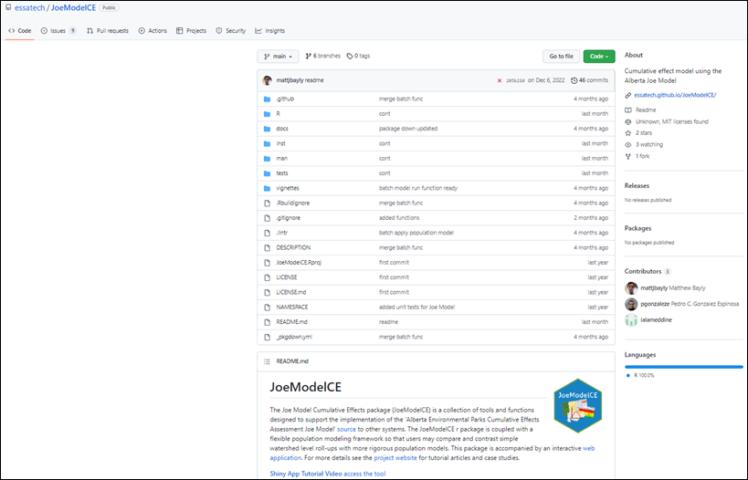
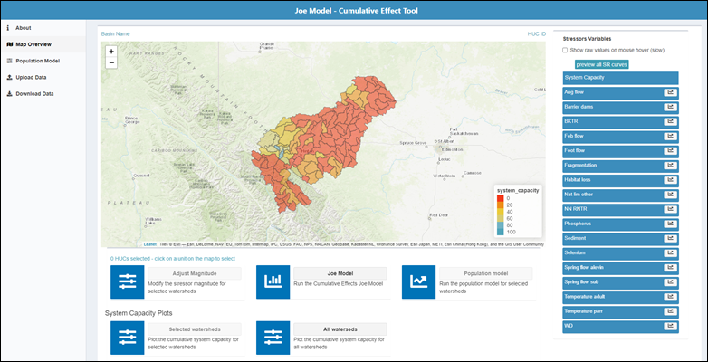
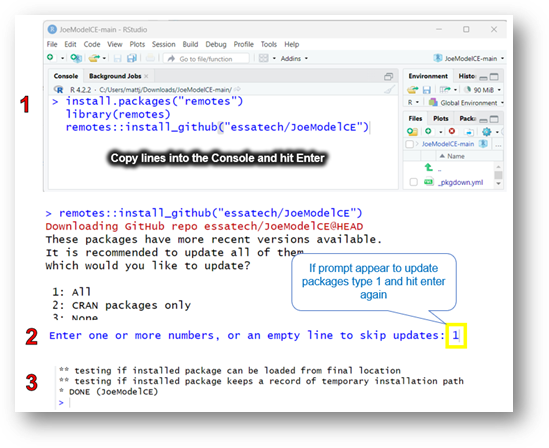
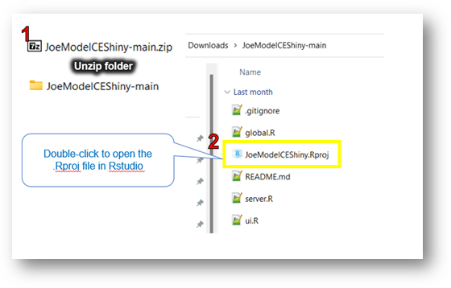
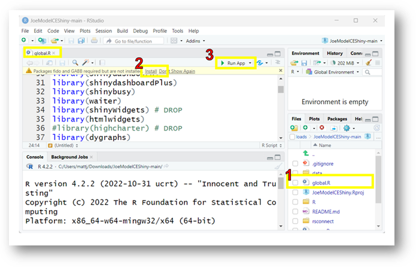

4 Setup and Installation
There are two ways to interact with the CEMPRA (Joe Model): through the R Shiny web application or directly using the stand alone CEMPRA R package, which can be downloaded to the users personal computer. Individuals unfamiliar with R can access the web application currently available here:
The web version of the CEMPRA Tool: https://essa.shinyapps.io/CEMPRAShiny/
However, we strongly recommend that individuals familiar with R download a local copy of the CEMPRA (Joe Model) Shiny application and run it on their own computers through RStudio. Running the application from your own computer reduces latency and other issues.
The CEMPRA framework is available as an R package and an R Shiny application. All components of the project are freely available and open source. Both the R package and the R Shiny application are freely available for download from GitHub:
R package: https://github.com/essatech/CEMPRA/
R Shiny application: https://github.com/essatech/CEMPRAShiny
4.1 R-Package

The CEMPRA package is part of a larger initiative to develop a framework for modelling cumulative impacts to Species-at-Risk (SAR) to guide recovery planning and adaptive management based on stressor-response functions related to taxa-specific threats. This framework allows users to generate models across a range of complexity and data quality, treating stressor-response functions as modular entities. The long-term vision is to build a library of stressor-response functions to allow users to accelerate the transition to quantitative modelling and adaptive management for Species at Risk and to encourage the archiving of CEMPRA models along with Species at Risk recovery strategies.
A quick start guide is provided below, but see Appendix D for tutorials and function documentation.
4.2 R Shiny Application

The CEMPRA modelling tool includes the CEMPRA R package, which is accompanied by an interactive R Shiny web application (https://essa.shinyapps.io/CEMPRAShiny; also available as the stand-alone Shiny app). This application acts as a flexible, user-friendly interface to interact with key components of the CEMPRA tool. It accepts user inputs for stressor-response functions, stressor magnitude, spatial units/polygons, and vital rates (for the life cycle model portion). Results are easily mapped, summarized, and plotted within the Map Overview page of the web application. Scenario results generated from the tool (and the associated life cycle model) can be exported directly from the application as an Excel spreadsheet (.xlsx). See Section 5 for details on data inputs and Section 6 for a complete walkthrough of the application.
4.3 Initial Setup and Installation
Inexperienced R users can run the Joe Model directly through the web application (https://essa.shinyapps.io/CEMPRAShiny/). However, downloading and running the model directly in RStudio is recommended for improved performance. Running the application locally (outside of shinyapps.io) also guarantees data privacy. To run the application locally, users must first have R and RStudio downloaded and installed on their computers. The CEMPRA R package (https://github.com/essatech/CEMPRA/) and the local version of the R Shiny web application (https://github.com/essatech/CEMPRAShiny) can be downloaded from GitHub.
To install R and RStudio on your computer:
- Go to the R website (https://cran.r-project.org/) and follow the instructions to download the latest version of R for your operating system (Windows, Mac, or Linux).
- Once the download is complete, double-click (open) the installer file and follow the prompts to install R on your computer.
- To open and run R scripts (files ending in .R), you can use RStudio, a popular Integrated Development Environment (IDE) for R. You can download the latest version of RStudio from: https://rstudio.com/products/rstudio/download/.
To install the CEMPRA R package on your computer:
- Download the CEMPRA R package from GitHub (https://github.com/essatech/CEMPRA/) onto your computer by clicking the green “Code” button and selecting “Download ZIP” from the dropdown. Unzip the folder once the download is complete.
- Install the CEMPRA R Package. The easiest way to install the CEMPRA package is from within RStudio using
remotes::install_github(). At this time, the package has not been published to CRAN, so the defaultinstall.packages()will not work for installing the CEMPRA package. Instead, use theremotespackage (ordevtools). Open RStudio and install theremotespackage using theinstall.packages("remotes")command in the Console. Next, install the CEMPRA package from GitHub using the following commands in the Console:
install.packages("remotes")
library(remotes)
remotes::install_github("essatech/CEMPRA")Once installed, use the library(CEMPRA) command to call the CEMPRA package into RStudio. You should only have to do the above steps once on your computer.

To access the raw code and example data for the R Shiny application:
Download the CEMPRAShiny repository from GitHub (https://github.com/essatech/CEMPRAShiny) onto your computer by clicking the green “Code” button and selecting “Download ZIP” from the dropdown. Unzip the folder once the download is complete.
Open the .Rproj file in R-Studio by double-clicking on it.

- Open a script called global.R by double-clicking on it in the bottom right corner. Next, click the ‘Install’ link on the yellow banner to install additional dependencies. Once complete, click the green arrow labelled ‘Run App’ to launch the application.

Within the CEMPRAShiny repository, example datasets are stored in the “demo” subfolder within the “data” folder:
https://github.com/essatech/CEMPRAShiny/tree/main/data/demo
You only need to do the above steps once on your computer. Next time you need to launch the application, simply click on the CEMPRAShiny.Rproj file to open it in R Studio, then click on the green ‘Run App’ button or simply type ‘shiny::runApp()’ in the console to launch the application.
(Advanced) Using Windows command line to clone a GitHub repository:
For users comfortable using the command line who wish to contribute to the project, GitHub repositories can be quickly cloned into a local directory using this alternative method:
Note: Prior to using Git commands in the command line, you must download and install Git on your computer (link).
Navigate to the desired GitHub repository (CEMPRA R package: https://github.com/essatech/CEMPRA/; CEMPRAShiny application: https://github.com/essatech/CEMPRAShiny).
Click the green “Code” button and copy the URL from the HTTPS tab.
Open the Windows Command Prompt window on your computer. Set your working directory using the following command:
cd “<file path>”- Next, use the git clone command to clone the GitHub repository into a folder in your working directory. For example:
git clone https://github.com/essatech/CEMPRA.git